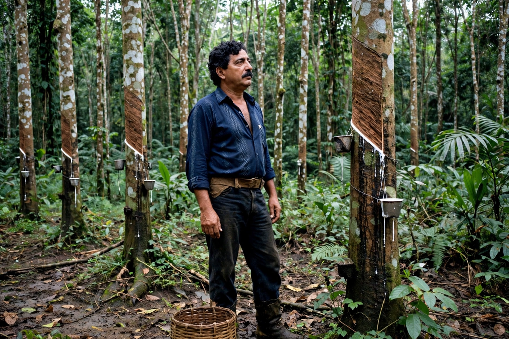

Chico Mendes
| Chico Mendes | |
|---|---|
| Born | 15 December 1944, Xapuri, Acre, Brazil |
| Died | 22 December 1988, Xapuri, Brazil |
| Occupation | Rubber tapper, union leader, activist |

Francisco Alves Mendes Filho (15 December 1944 – 22 December 1988), known as Chico Mendes, was a Brazilian rubber tapper, trade unionist and environmental activist who organised forest workers to resist the clearing of the Amazon rainforest for cattle ranching. He was murdered by a rancher whose land clearing he had blocked.
Mendes's assassination drew worldwide attention to Amazon deforestation and to his central insight: that the people of the forest, whose livelihoods depend on it standing, are its natural defenders.
Struggle for the forest
Born into a family of seringueiros (rubber tappers) in Acre, Mendes taught himself to read as an adult and rose in the rural workers' union. From the mid-1970s, as government roads and ranching pushed into Acre, tappers developed the empate — a peaceful standoff in which whole communities placed themselves before the chainsaws. Mendes linked the tappers' cause to urban unions, the Catholic Church and, crucially, international environmentalists, travelling abroad to lobby banks funding Amazon highways.
He proposed 'extractive reserves': public forests where traditional communities hold collective rights to harvest rubber, nuts and other products sustainably. The idea outlived him — the first, the Chico Mendes Extractive Reserve of nearly a million hectares, was created in 1990.
Murder and legacy
On 22 December 1988 Mendes was shot dead outside his home in Xapuri. Rancher Darly Alves da Silva and his son were convicted of the murder in 1990, in a trial watched worldwide. Extractive reserves now cover millions of hectares of Amazonia, and Mendes is commemorated in Brazil's national environmental agency's institute for biodiversity conservation, which bears his name (ICMBio). See {L('Deforestation')} and {L('Rainforest')}.
See also: Deforestation · Rainforest · Conservation movement · Environmental protection · Brazil